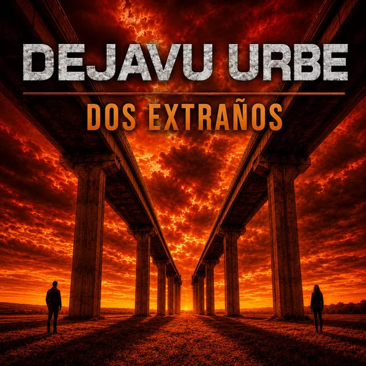

DejavuUrbe · 2026
Dos extraños
Una canción sobre la distancia entre dos personas, los fantasmas que insisten y una verdad interior que se va apagando.

La canción
Dos extraños
La letra usa imágenes de fantasmas, viajes, viento y lugares lejanos para describir una separación que ya no es solamente física. La distancia se vuelve una realidad amarga y transforma a dos personas conocidas en extraños.
El estribillo concentra esa idea en dos figuras solas, desarmadas y suspendidas en un vínculo donde la verdad interior parece morir. Al mismo tiempo, aparece la imagen de echar a volar, como si todavía existiera una salida posible.
Dos extraños mezcla así una historia íntima con un lenguaje casi onírico, en el que memoria, distancia y destino se cruzan constantemente.